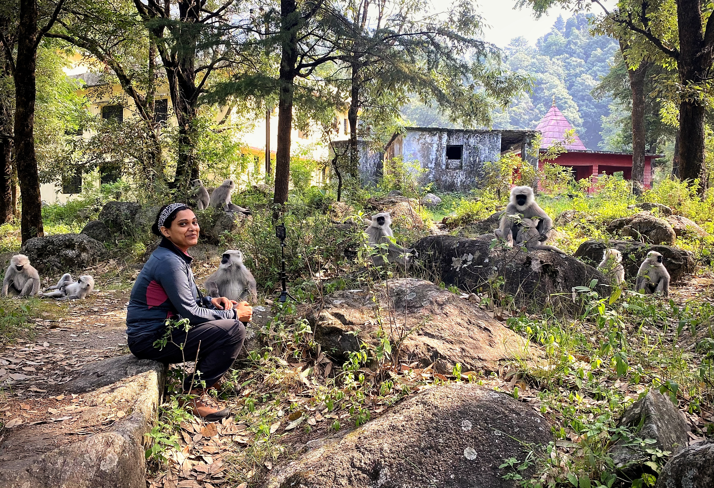

Director & Founder / Student and Training Lead
Himani Nautiyal | MS, DSc, Post-Doctoral Fellow
Dr. Himani Nautiyal is a Biological Anthropologist working as a postdoctoral researcher with Howard University, Washington DC, USA, and the National Institute of Advanced Studies, India.
In the past seven years of her field research in the higher Himalayas, she has developed multidisciplinary approaches to identify and predict factors driving threats to biodiversity and local communities. Her work uses Himalayan langurs as a model for understanding animal-human coexistence and supporting mitigation practices that facilitate coexistence between local communities and wild animals.